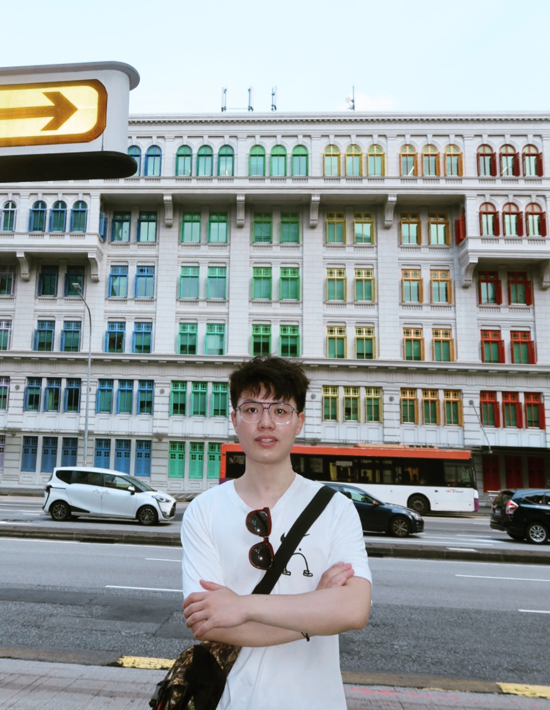

Peng(Richard) Xia 夏鹏
I am a first-year Ph.D. student in Monash Medical AI Group (MMAI) at Monash University, advised by A/Prof. Zongyuan Ge. I am also a research intern at Airdoc, Shanghai. Before that, I obtained the B. Eng degree from AI Experimental Class, School of Computer Science and Technology in Soochow University in 2023.
I am deeply intrigued by large-scale AI models, e.g.,LLMs and VLMs. Moreover, my fascination extends to their practical applications, with a specific focus on medical imaging. My research endeavors involve delving into the methods of harnessing the potential of these models, aiming to not only enhance their performance but also bolster their resilience in the face of various challenges (e.g., distribution shifts). I am always open to collaboration. Feel free to drop me an e-mail. :-)
Email: peng.xia AT monash DOT edu; richard.peng.xia AT gmail DOT com


✨News
- [09/2023] One paper was accepted by NeurIPS 2023 Datasets and Benchmarks Track.
- [09/2023] I join MMAI to pursue a Ph.D. degree at Monash University.
- [08/2022] Share paper list about multi-modal learning in medical imaging.
- [07/2022] I start working at Airdoc as a research intern in Shanghai.
- [06/2022] I won third place award in Shanghai-HK Interdisciplinary Shared Tasks(2022) task 1 "Trigger Identification".

© Peng Xia | Last updated: Sept. 2023